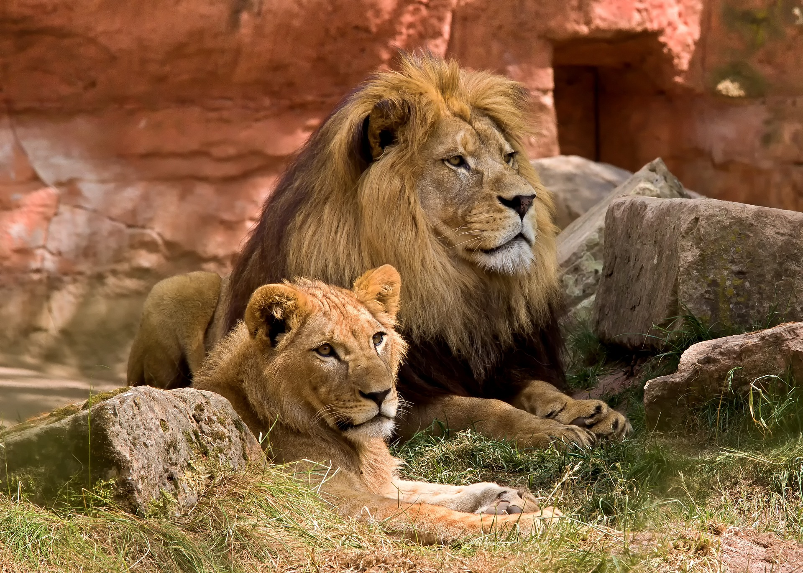
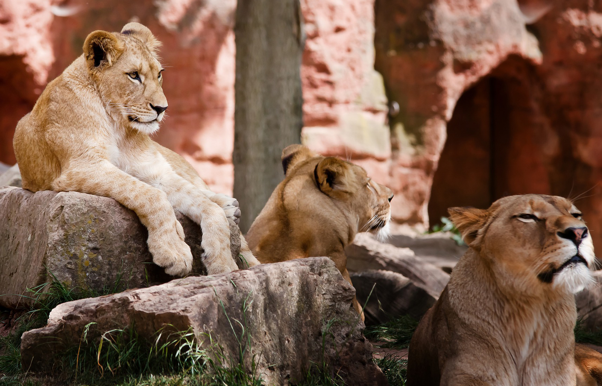
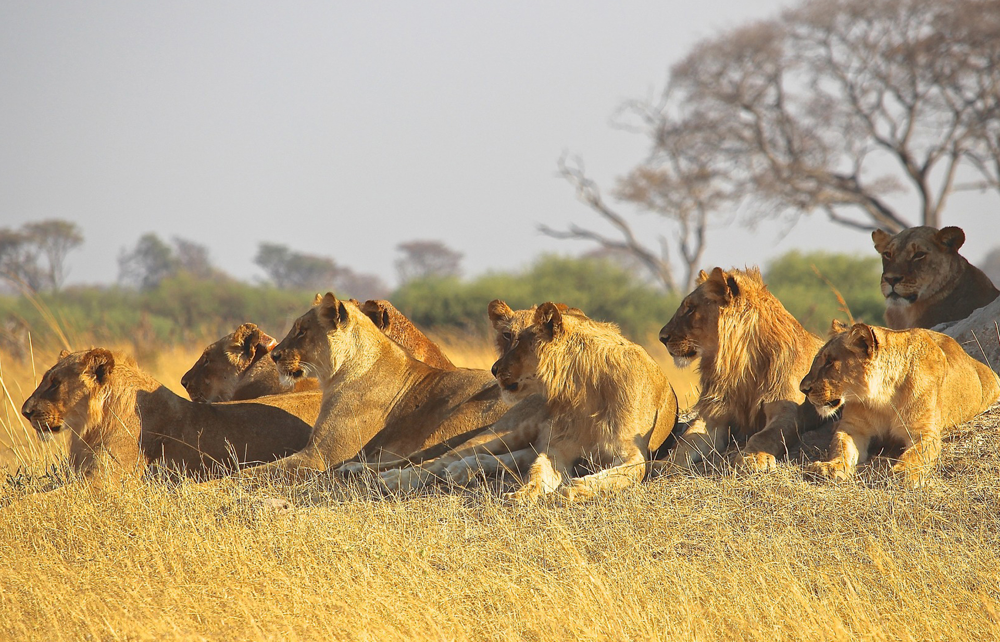
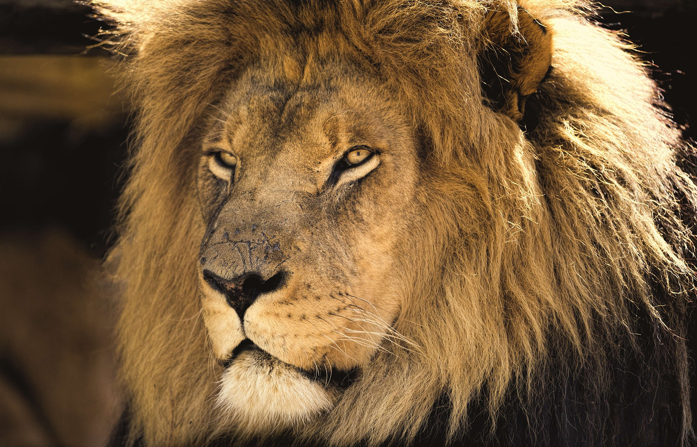

El Rey de la Selva

El león, Panthera leo, es seguramente el gran felino más conocido del mundo y tanbién sobre el que másse ha escrito.
Después del tigre, es el más grande en tamaño, pudiendo alcanzar hasta los 300 kilos de peso.
Es un mamífero cuadrúpedo de la familia de los felinos, típico del África subsahariana y algunas regiones del congo y de la India.

Características

El león es un especie adaptada a la vida de la sabana
La mayoría de los leones de la actualidad viven en el Este y Sur de África.
Los leones son grandes animales cuadrúpedos de color dorado o beige claro.


